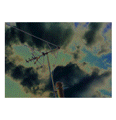

About Queensboro BalladsI introduced Queensboro Ballads in July 1995, one year after announcing my earlier project, Literary Kicks. Server space was donated by Levity, a venture run by my friend Dan Levy. The following are detailed notes on the ten tracks that make up this album. The Bridges of New York CityThere are actually 17 bridges connecting the island of Manhattan to New Jersey, the Bronx, Brooklyn and Queens. There are also several bridges in New York City that do not connect to Manhattan, such as the Throgs Neck and Whitestone Bridges between Queens and the Bronx and the Verrezano between Brooklyn and Staten Island. I wish I could write about every bridge in New York City, but I only wrote about five particular suspension bridges in Manhattan that are accessible to walkers. I planned to use my own photos to illustrate the piece, but as I was laying out the page I used other photos as placeholders, including two shots of the Queensboro and George Washington bridges from an excellent Paul Goldberger book about Manhattan architecture. After I developed my own photos, I realized I liked these two better and decided to leave them there. The images of the Brooklyn, Manhattan and Williamsburg bridges are my own. I hope Paul Goldberger doesn't get mad. The distant shot of the Williamsburg Bridge was taken from the roof of 206 East 7th Street in the East Village, a building famous in Beat history due to some photos Allen Ginsberg, William S. Burroughs and Jack Kerouac took there, on the roof and on the fire escape, in 1953. The image of downtown Manhattan at the top of the page is a screen grab from Microsoft Flight Simulator with the New York City scenery add-on. The three bridges visible here are, from top to bottom, the Brooklyn, the Manhattan and the Williamsburg. Where He LivedThrough the great concert setlist archive at Mark Leone's Grateful Dead site, I was actually able to find the exact set list for the Dead show Phil went to in '82, knowing only that they had played 'The Wheel' out of Drums->Space. This must have been a very good show: Glens Falls Civic Center, Glens Falls, NY (4/14/82) Incidentally, much of Queensboro Ballads is fiction -- but I do remember Phil describing this show, and the great 'Wheel,' in detail. FloatingThe names are innocent to protect the changed. The History of the California BurritoOkay, I was exaggerating -- I never really saw a radish inside a burrito. The rest is true. This story was originally published in Enterzone. The image of downtown San Francisco on Page 3 is a screen grab from Microsoft Flight Simulator with the San Francisco scenery add-on. ApparitionThere is not actually a club called the Coffee Grinder. This is just generally about the Bleecker Street/MacDougal Street "scene" -- Cafe Wha, the Bitter End, the Village Gate, Kettle of Fish ... and it's about a particular time in life. Coming Back to QueensIt was hard for me to call this part of the project finished, because there is so much more to tell about Queens. What about the Bowne House in Flushing? What about Louis Armstrong and Ethel Merman and Michael Landon? (Yeah, they're from Queens). Damn, I hardly even got to talk about Malcolm X (East Elmhurst) or Helen Keller (Forest Hills). Oh well -- I could have worked on these neighborhood sections forever, but then I would never have gotten to move on to anything else! I took all the photos, except for the shot of me and my son (4 years old at the time) walking back home from Shea Stadium, which was taken by my then 9-year-old daughter. Working Class Hero/Eleanor RigbyI had a really great time doing this one. Someday, if I find the time, I'll digitize the entire video (about 25 minutes) and put it up here. What a series of faces I got, all in a single ride from Times Square to Flushing! This is my favorite piece on the album, I think. I presented it, along with Where He Lived, as a "single" in early summer '95, while I was still working on the rest of the album. SnappersThe painting is by Manet, and I grabbed it from the collection at the Louvre website. A Visit to the Walt Whitman MallI grew up in Hauppauge, and we usually went to the Smith Haven Mall, which has better stores than the Walt Whitman Mall, and also doesn't try for any literary allusions. Roosevelt Field is also pretty good. We had a lot of fun taking these pictures! LoomingsThis is where I get self-consciously literary -- I felt I was reaching a bit and almost didn't let this one out. But a few people have told me this is their favorite piece, so I guess it's not too bad. Phew ... |